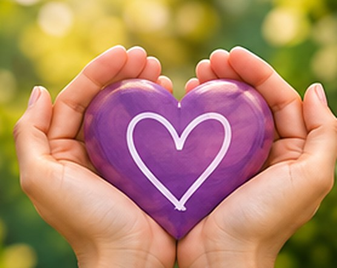
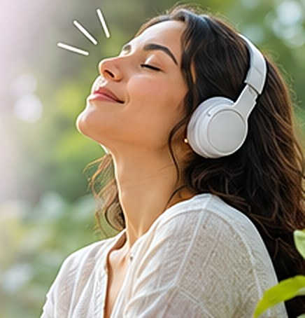
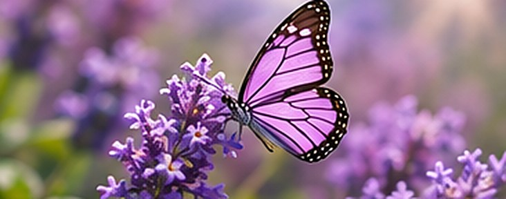

Biblioteca digital
Guías breves sobre autocuidado, manejo del estrés en el día a día, hábitos saludables y señales para buscar ayuda profesional.
Gratuito
Ver recursosUn espacio para reconocerte y comenzar
Promovemos el bienestar emocional, compartimos herramientas de autocuidado y te acercamos a rutas de apoyo en salud mental en Barranquilla y el Atlántico.
Conoce en 20 segundos quiénes somos y cómo puedes sumarte.
Somos una iniciativa social que nace en Barranquilla para construir una comunidad más consciente, empática y libre de estigmas, donde hablar de salud mental sea cercano, seguro y respetuoso.
Reunimos en un solo lugar información confiable, actividades educativas y orientación hacia redes de apoyo. Trabajamos de la mano de aliados y profesionales habilitados: no diagnosticamos ni reemplazamos la atención psicológica, psiquiátrica o de urgencias.
Escucha y respeto por cada historia.
Herramientas para cuidar la salud mental a diario.
Redes de apoyo que nos fortalecen.
Espacios seguros, educativos y cercanos para cuidar tu salud mental.
Guías breves sobre autocuidado, manejo del estrés en el día a día, hábitos saludables y señales para buscar ayuda profesional.
Gratuito
Ver recursosEncuentros psicoeducativos sobre bienestar emocional, comunicación, redes de apoyo y habilidades para la vida, con aliados idóneos.
Gratuito o subsidiado
Ver próximos talleresTe ayudamos a identificar servicios, canales institucionales y profesionales disponibles para buscar la atención adecuada.
Gratuito
Conocer las rutas
Cuidar tu salud mental también es una forma de volver a ti.
Guías breves para cuidarte en el día a día. Toca cada una para leerla.
Siéntate cómodo, inhala por la nariz contando hasta cuatro y exhala lentamente contando hasta seis. Repite durante cinco minutos. Exhalar más largo de lo que inhalas ayuda al cuerpo a relajarse.
Acuéstate y levántate a la misma hora, aleja las pantallas una hora antes de dormir y evita el café en la tarde. Un descanso regular mejora el ánimo y la concentración.
Cada dos horas, levántate, estira cuello y hombros y toma agua. Dos minutos de pausa reducen la tensión acumulada del estudio o el trabajo.
Si el malestar dura más de dos semanas, afecta tu sueño, tu alimentación, tus estudios o tu trabajo, o si tienes pensamientos de hacerte daño, busca ayuda profesional. En una emergencia llama al 123.
Encuentros presenciales en Barranquilla. Los cupos son limitados.
Sábado, 9:00 a. m. a 11:00 a. m. · Gratuito
Sábado, 9:00 a. m. a 11:00 a. m. · Subsidiado, con aporte voluntario
Sábado, 3:00 p. m. a 5:00 p. m. · Gratuito
Así puedes buscar ayuda según tu situación.
Herramientas prácticas para reconocer tus emociones, bajar la tensión del día y fortalecer tu bienestar.

Sigue el círculo durante un minuto: inhala mientras crece, exhala mientras se encoge.
Elige una actividad y descubre cuánto se cubre con los aportes de los participantes y de los aliados.
Actividad seleccionada:
Esperando información…Aporte total estimado:
$ 0Aquí verás cuánto cubren los aportes y si hace falta apoyo adicional. Cualquier excedente se destina a nuevas actividades de la fundación.
No. La biblioteca digital y la orientación son gratuitas, y los talleres son gratuitos o subsidiados. El aporte es voluntario y ayuda a que más personas puedan participar.
No. Somos una puerta de entrada informativa y comunitaria. Te orientamos hacia profesionales y servicios habilitados cuando lo necesites.
Escríbenos por WhatsApp o correo. Podemos organizar jornadas de bienestar para tu comunidad y usar la calculadora para estimar el presupuesto.
Llama a la línea de emergencias 123 o acude al servicio de urgencias más cercano. Pedir ayuda es un acto de valentía.
¿Tienes una pregunta, quieres participar o ser aliado? Escríbenos.

Se abrirá WhatsApp con tu mensaje listo para enviar.